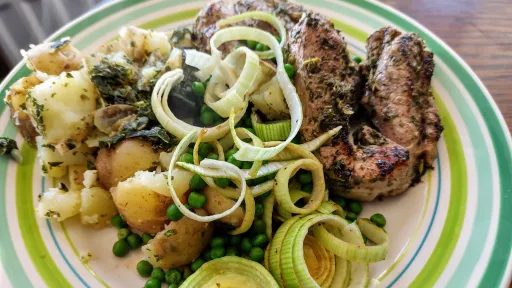

Minty salsa verde lamb with lemony potatoes and leeks
25 mins
Serves 2Gluten Free

Ingredients
400 g new potatoes, halved
1x 30 g pack mint, leaves roughly chopped
1x 30 g pack flat-leaf parsley, leaves roughly chopped
1 tbsp capers, finely chopped, plus 1 tsp brine from the jar
1 clove garlic, finely crushed
½ tbsp Dijon mustard
2 tbsp extra virgin olive oil
zest and juice of 1 lemon
2 small lamb steaks, about 75g each
1 leek, thinly sliced
150 g frozen peas
Instructions
Boil the potatoes in salted water for 15 minutes until tender.
Meanwhile, to make the salsa verde, place half of each of the mint and parsley in a small food processor with the capers and brine, garlic, mustard, 1 tablespoon of olive oil, 2 tablespoons of water and half the lemon zest and juice. Pulse until you have a rough paste. Alternatively, finely chop all the ingredients and mix together until well combined. Season to taste then divide between 2 bowls.
Toss the lamb steaks in 1 bowl of salsa verde until well coated. Heat a nonstick frying pan over a high heat until it starts to smoke. Add the lamb steaks and cook for 3-4 minutes on each side until medium-well done. Transfer to a plate and leave to rest for 5 minutes.
Wipe the pan clean and heat the remaining tablespoon of oil. Add the leek with 2 tablespoons of water and cook covered, over a medium heat, for 3-5 minutes. Add the peas and cook for a further 3-5 minutes, tossing occasionally, until softened. Season to taste with sea salt and black pepper.
Drain the potatoes, steam dry for 2 minutes then return to the pan. Add the rest of the lemon juice and zest and the remaining mint and parsley along with 1 tablespoon of the salsa verde. Lightly crush with a potato masher. Season to taste.
Serve the lamb with the crushed potatoes, leeks and peas, drizzled with the remaining salsa verde.